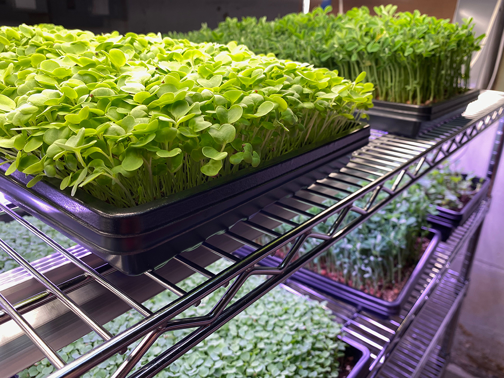

Operations
At Plant Lab everything is an experiment. We are growing things, and this paragraph will say some stuff about it.
Indoor Produce
At Plant Lab all our food is grown using Controlled Environment Agriculture (CEA)... indoor year-round farming. We carefully control the growing environment so we don't need any chemicals, pesticides, herbicides, or fertilizers. We have an extensive food safety plan and follow it closely. Our aim is to grow clean, high quality food that is good for the people who eat, the people who grow it, and the environment.
Right now we grow mostly microgreens, lettuce, and some culinary herbs. We are working on bringing some additional hydroponic equipment online and will be expanding the type of crops we grow in the future.
Garden Seedlings
In the spring we offer a selection of seedlings to help stock your garden this summer, tomatoes, pepper, and lots more. We use the best seeds we can find (heirloom/open pollinated in most cases), some seeds we have saved ourselves and others we buy from a seed farm in Michigan. Pre-orders are encouraged early in the year and we'll have them ready for pickup in May once it is safe to plant them out into the garden.
Outdoor Growing
Part of what we hope to do by putting a farm in the middle of the city is to experiment with how space is used. This means figuring out how to farm an indoor space that was a Yoga studio, and before that several restaurants, and before that a gas station! It also means thinking critically about our outdoor space and how it can best serve us, our neighborhood, and our larger community. When we purchased the property almost 50% of the Plant Lab property was dedicated to parking… that is too much.
In 2022 we start by reclaiming an area of the parking lot and turnned it into a tiny flower farm.
This is where we say something about the butterfly garden.